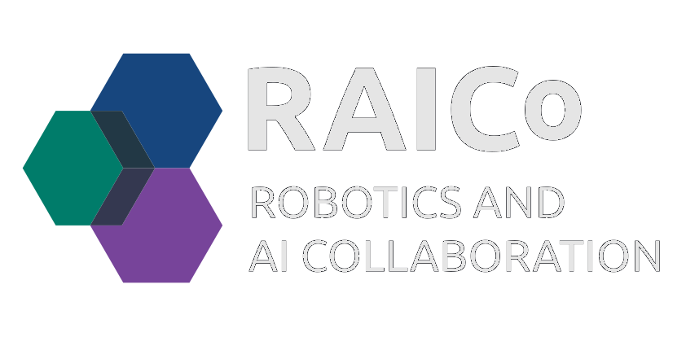
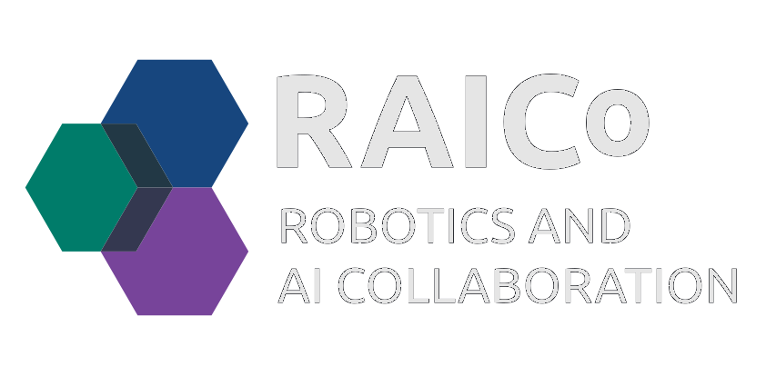
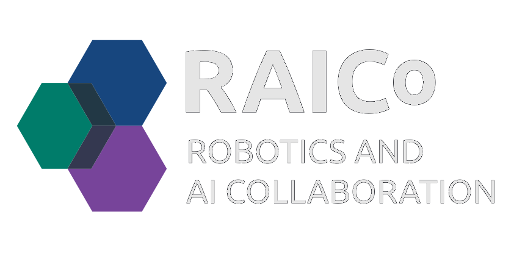

Autonomous Navigation in Dark Unknown Environments using Vision
PhD Student: Nathan Shankar
Supervisors: Pawel Ladosz | Hujun Yin

PhD Student: Nathan Shankar
Supervisors: Pawel Ladosz | Hujun Yin
Robots struggle when the lights go out — cameras fail, maps disappear, and navigation breaks down. This research aims to give robots the ability to see and move reliably in complete darkness by combining infrared sensing, intelligent image enhancement, and spatial awareness.
The goal is to make vision reliable anywhere without relying on a multitude of sensors. By leveraging infrared perception and learning-based enhancement, robots can reconstruct their surroundings, recognize objects, and navigate safely in environments where traditional vision systems fail.